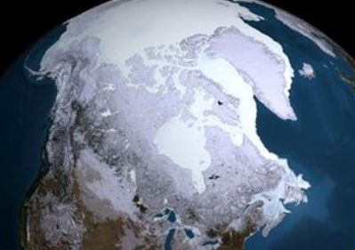
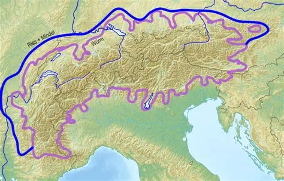
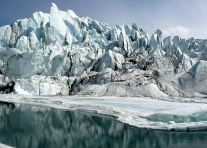
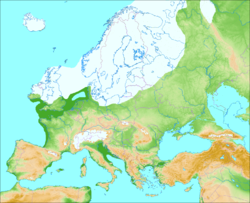

Clima

Durante todo el Pleistoceno, extensos campos de hielo se expandieron durante las zonas más elevadas del planeta (proceso llamado glaciación), tomando como principal concentración al hemisferio norte, aunque ambos hemisferios fueron alternándose según las épocas presentes.
La razón de por qué en Sudamérica no hubo tanta presencia de la glaciación fue debido a que, si bien el Ártico produce el mismo frío que su contra parte en el norte, está separado de los continentes meridionales por un océano circumpolar el cual se extiende entre los 55º y 60º, lo que redujo la creación de glaciares en el hemisferio sur y lo que a su vez provocó que el Mar de Hoces siempre se mantuviera libre de glaciares.
Características Climáticas Principales:
- Ciclos Glaciares e Interglaciares:
- Enfriamiento Global:
- Aridez y Polvo:
- Bajo Nivel del Mar:
- Influencia Orbital:
Se produjeron al menos 20 ciclos de avance y retroceso de glaciares. Durante las glaciaciones, el hielo cubría hasta el 30% de la superficie terrestre, extendiéndose por Norteamérica, Europa y Rusia.
Las temperaturas globales eran notablemente más bajas, con una disminución media de unos 5-6°C en los periodos más fríos.
El clima era mucho más seco que hoy. La reducción de precipitaciones y la actividad glaciar aumentaron las tormentas de polvo
Durante el punto máximo de las glaciaciones, gran parte del agua estaba atrapada en el hielo, lo que provocó que el nivel del mar fuera más de 120 metros más bajo que en la actualidad.
Las fluctuaciones climáticas fueron impulsadas por variaciones en la órbita terrestre (ciclos de Milankovitch), que modificaron la cantidad de energía solar recibida.
Las condiciones climáticas observadas en el Pleistoceno son una continuación del clima de la época anterior, el Plioceno, al final del cual las temperaturas del planeta descendieron considerablemente. En este sentido, la característica principal del clima del Pleistoceno fueron las glaciaciones que se produjeron, así como la formación de gruesas capas de hielo en la superficie de los continentes. Esto último se observó principalmente en las franjas de tierra más cercanas a los polos. La Antártida se mantuvo casi la totalidad del tiempo cubierta de hielo, en tanto que los extremos norte de los continentes americano y europeo estuvieron cubiertos de hielo durante las glaciaciones. Durante el Pleistoceno se produjeron cuatro glaciaciones, separadas unas de otras por períodos interglaciares. Las glaciaciones reciben un nombre distinto en el continente europeo y en el continente americano.
- Günz:
- Mindel:
- Riss:
- Würm:
conocida con este nombre en Europa, en América se conoce como glaciación de Nebraska. Fue la primera glaciación que se registró en el Pleistoceno. Terminó hace 600.000 años.

conocida en el continente americano como glaciación de Kansas. Ocurrió tras un período interglaciar de 20.000 años. Tuvo una duración de 190.000 años.

ercera glaciación de esta época. Se conoce en América como glaciación de Illinois. Tuvo su final hace 140.000 años.

es conocida como la Edad del Hielo. En el continente americano se denomina glaciación de Wisconsin. Tuvo su inicio hace 110.000 años y finalizó aproximadamente en el 10.000 a.C.

Al finalizar la última glaciación, se inició un período posglacial que se ha extendido hasta la actualidad. Muchos científicos consideran que el planeta actualmente se encuentra en un período interglaciar y que es probable que en algunos millones de años se desencadene otra glaciación.
Likes: 0